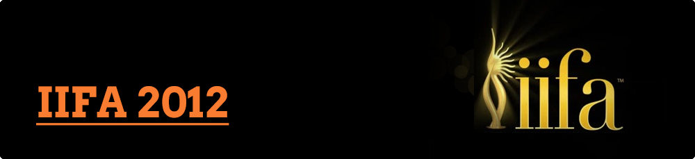
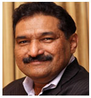

Environment
The International Indian Film Academy is an organisation dedicated to promoting Indian Cinema beyond India and placing it on an international platform by fostering exchange and interaction to enhance business opportunities. IIFA has grown from ‘One Amazing Night’ to a three-day weekend, which celebrates and hosts various events and activities. Each year IIFA has seen an increase in participation over the 3-day weekend from the industry over which, press conferences, celebrity special events, IIFA world premieres, a FICCI-IIFA global business forum, IIFA film festival, IIFA workshop and the ultimate in glitz - the IIFA awards presentation ceremony takes place.
Through the ‘Weekend and Awards’, IIFA connects fans to their favourite stars through a host of events. Awards ceremonies recognize the finest in Indian cinema and are watched by millions on television.
In order to achieve its mission, IIFA has travelled through London, South Africa, Malaysia, and Singapore, to Amsterdam, Dubai, Yorkshire, Thailand, Macao and Sri Lanka. IIFA 2011 was held in the Canadian city of Toronto.
The PR Agency works closely with IIFA in order to showcase the talent and brilliance that Indian cinema offers the world. The effort also helps spread the magic of Indian cinema around the world, thus creating bonds between people, film industries, and countries.
Agency Brief
- Widen the reach of Hindi cinema whilst garnering a global audience and engaging it with a wide-spread media reach
- Mark IIFA’s foray into North America and the biggest celebration of Indian cinema in Canada
- Showcase IIFA as a world-class event via a large convergence of worldwide media
- Deliver an impactful message to viewers and readers about IIFA, the host country and long term benefits
Objective
- To showcase a prolific and successful IIFA 2011 in Toronto, Canada
- Publicize the 12th year of IIFA as the biggest Bollywood phenomena to come out of India and into Ontario
- Showcase IIFA as a Global event, bring worldwide attention to IIFA 2011 and the Province of Ontario, focusing on certain key markets, including India
Challenges
From a PR perspective, the following are some of the biggest challenges we faced when trying to execute the media relations campaign for IIFA 2011:
- Star availability – Gaining access to film stars and personalities, and scheduling interviews and media interactions with them in order to drive coverage.
- Making media understand the fact that as a body, IIFA is not yet another award ceremony but a well-coordinated effort to promote Indian cinema globally
- International Destination – Though the popularity of Indian cinema is growing at an exponential rate in North America, it remains an uncharted territory where traditions, culture, people and the media scenario is different when compared to India
- In contrast to North America, previous IIFA host destinations were easier to access and understand and offered the agency a higher concentration of Indian cinema fans
- Since regional media make up a large segment of the media in India, their role in writing about IIFA was critical to the success of the event
- To ensure that exciting and newsworthy coverage about IIFA appeared in different Indian publications right through the six month period
- Hosting a large Indian media contingent and ensuring they are well taken care of
- The IIFA Awards are one of the most glamorous and awe-inspiring award ceremonies in the world. This fact needed to be understood and written about well by the Indian media
Strategic Approach
- Garnering interest from mainstream media through exclusive coverage, healthy attendance, and regular interaction with stars and the IIFA Team
- NGOs & Charity Angle – involved tremendous participation from corporate houses and Bollywood personalities
- The campaign followed an umbrella messaging structure that revolved around creating strategic communication across key mainstream and regional publications, magazines, the online space, and television networks. The plan comprised of proactive and reactive PR activities to maintain an exciting and newsworthy profile of the events in the Indian media
- The umbrella campaign also ensured a consistent stream of visibility within positioning media, up-weighted with the support of photographs and press information in the form of media releases
- Categorically targeting regional publications across the country, providing them with well-translated information packs about IIFA over the years along with a plethora of pictures in order to garner feature stories
- Reaching out to media laterally, vertically, aligned to target audiences, and assessed in accordance to audience media consumption patterns
- In addition to the on-going PR activity, we implemented individual sub-campaigns promoting specific facets of the IIFA campaign directed by the India team
- IIFA sponsored columns in targeted newspapers and magazines
- Strengthening IIFA’s key attributes being global, glamorous and credible thus establishing it as a truly unique event
- Partnering with the tourism body of the host country, showcasing North America as a perfect venue for the IIFAs, highlighting key aspects of the area, and depicting it as a preferred travel destination
- Bringing attention to the fact that IIFA Awards affect the tourism and hospitality industry positively
Events and activities handled to maximize and generate media mileage
- Greening the IIFAs – Promoting the IIFA and United Nations Environment Programme (UNEP) partnership in fighting global warming
- Managing the 12th IIFA Voting Weekend
- Managing the India announcement of the 12th IIFA Weekend being held in Toronto, Canada
- Announcement of IIFA and Toronto International Film Festival’s (TIFF) initiative in celebrating the life of Raj Kapoor and The Golden Age of Indian Cinema
- Videocon d2h IIFA Weekend’s 12th year celebrations that follow with an IIFA World Premier of a to-be-released movie (Double Dhamaal) and IIFA Awards Performance Announcements
- 12th IIFA Press Conference on the announcement of IIFA Film Festival (IIFA and different tie-ups with soon-to-be-released films) – Chillar Party, Love Break Ups Zindagi, Politics of Love and Tell Me O Khuda
- Announcement of IIFA Rocks (fashion show with promising Indian and Canadian fashion designers)
- The main (3-day) weekend in Toronto – hosting and managing over 80 Indian Media representatives from various media categories and languages
Achievements
- IIFA 2011 delivered a total of 2176 print news clips across all major publications/magazines in India giving a total media PR value of Rs. 117,43,18,822 - the highest for IIFA in the last 5 years
- IIFA received a total of 1769 news clips across all major Indian television channels amounting to Rs. 373,45,51,500 for 10,437 minutes / 173.9 hours tallying at an on-air time of over a week
- IIFA Media reach - Mumbai, Pune, Ahmedabad, Nagpur, Chennai, Bangalore, Hyderabad, Jharkhand, Patna, Kolkata/West Bengal, Delhi, Indore, Lucknow and Bhopal – the largest ever for IIFA in the last 5 years
- The coverage we received for IIFA was 99% positive
- BBC Worldwide did a case study on IIFA thereby taking IIFA 2011 to viewers across the world
- IIFA received 95 front-page stories across key publications in India
- Although the event was hosted in North America, an otherwise prohibitive destination in terms of cost of travel and stay, we managed to host and manage more than 85 Indian media representatives
- IIFA stood out from the many award ceremonies as the grandest, yet one with a mission to showcase to the world the wealth of talent Indian cinema has to offer and celebrate the achievements of the industry on a world stage
- Highlighted the immense economic benefits India and host countries receive through the IIFA Awards
- Increasing interest among global media in writing about Indian cinema
- Clear indication in the shift of reportage and the kind of stories appearing. Well-researched and well-written stories on the Indian film industry and actors
- Reports and features across the country in English and Regional publications across mainstream, film, trade, electronic, radio and online media
Media Values
- Since the time ZZEBRA PR (now Concept PR) has been on board with IIFA, for the all work and editorial media coverage received, the PR Value generated in India is in excess of INR 491.28 crores
Client Testimonials

Having worked with other major PR firms, it was quite an unusual practice to liaise with a boutique company but we were pleasantly surprised that the kind of attention to detail and dedication we received from Zzebra PR (now Concept PR) was exceedingly useful and added an invaluable advantage to having them as a agency. Over the past year, we have found them to be extremely competent and we credit much of our IIFA 2011 publicity in the country to their expertise and nationwide reach. We were pleased with their handling of the Indian region of the IIFA campaign. Their unwavering work for IIFA 2011 made for a value of over 80 million USD. They are extremely accommodating, affable and above all things, reliable and timely. Zzebra has proven time and again their unvarying
assistance and support through the few hectic months and pertinent to the
Indian media contingent’s travel, hospitality and overall lookout.
SABBAS JOSEPH
Director, Wizcraft Int. Ent. Ltd. & IIFA
Over the last 18 months, Zzebra PR (now Concpet PR) have exceeded every expectation and set the benchmark for all PR Agencies for us in terms of their ‘glocal’ approach. Over time they have become our trusted publicity partners. Their vitality, enthusiasm and quality of work give us a sense of them having invested as much into our premiere projects. We appreciate their attention to details and their constant representation in our office helping us work as a cohesive unit. Moreover, the team at Zzebra assigned to our project is extremely co-operative and easy to work with and we have developed a great working synergy with them. This relationship has only grown and we are happy to have them onboard for IIFA 2012 as well.